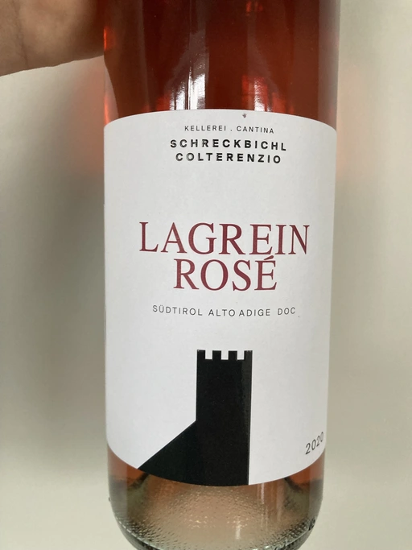

- Type
- Rose Still, Dry
- Producer
- Colterenzio
- Vintage
- 2020
- Location
- Italy, Alto Adige DOC
- Grapes
- Lagrein
- Alcohol
- 13
- Sugar
- 3.9
- Price
- 389 UAH
- Cellar
- N/A
Producer
Wine producer from Trentino-Alto Adige, Italy. Colterenzio was created as a cooperative, which is typical in this region. They own one of the oldest vineyards in Europe.
Their most famous wines are from Lafoa. Cabernet Sauvignon Lafoa 2017 is considered to be the best Cabernet Sauvignon in 2021 (citation needed).
Ratings
There are no ratings of this wine yet. It’s waiting for the right moment, which could be today, tomorrow or even in a year. Or maybe, I am drinking it at this moment… So stay tuned!